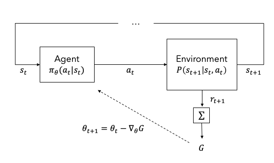
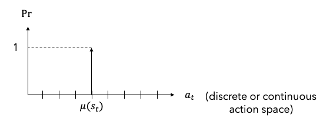
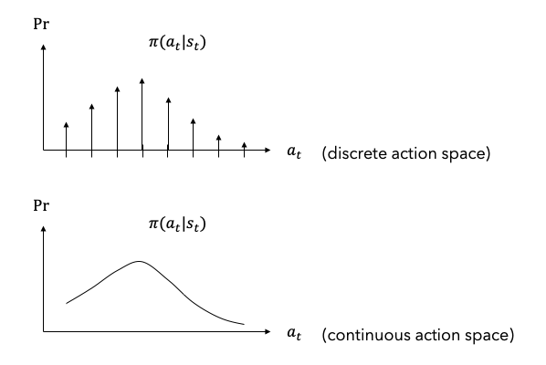
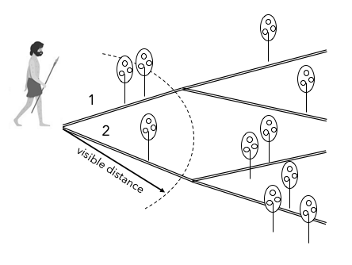
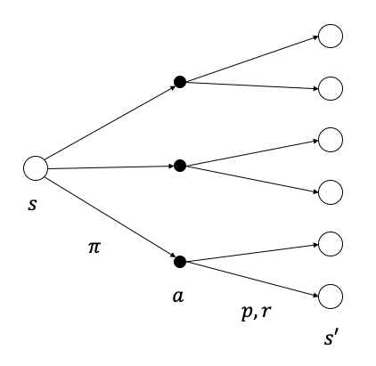
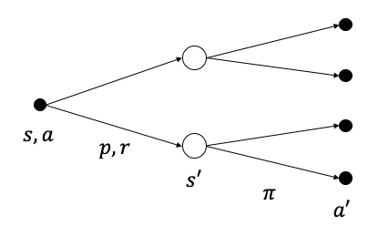

조금만 생각해보면 인간이 오래동안 먹지 못했을 때 배고픔을 느끼고 맛있는 음식을 먹었을 때 행복감을 느끼는 본능이 있기 때문에 음식으로부터 에너지를 얻고 생명을 유지한다는 것을 알 수 있다. 강화학습(reinforcement learning){Sutton.2018}은 인간이나 동물이 자신의 행동에 대한 환경의 보상에 따라 학습하는 과정을 모방하여 만든 기계학습의 한 분야이다.
Figure 1은 에이전트(agent)와 환경(environment)으로 이루어진 강화학습의 기본적인 구조를 나타낸다. 에이전트는 현재 상태(state) s_t를 입력받아 행동(action) a_t를 출력하고 환경은 그 행동에 영향을 받아 다음 상태 s_{t+1}로 변화한다. 이 때 보상(reward) r_{t+1}이 주어지는데 장기적인 보상의 합을 이득(return) G라고 한다. 에이전트는 장기적인 보상 합의 기대값(이득)을 최대화(to maximize the sum of long-term expected rewards) 하도록 학습된다. 이러한 학습을 강화학습 이라고 한다.

Figure 1. Basic architecture of RL
에이전트의 모든 가능한 행동의 집합을 행동공간(action space) A이라고 한다. 즉, a\in A이다. 행동공간이 이산적이면 이산 행동공간(discrete action space), 연속적이면 연속 행동공간(continuous action space) 이다. 테트리스 게임에서 좌우 이동버튼을 이산 행동공간이라고 할 수 있으며 자동차 운전시 조향핸들각과 페달변위를 연속 행동공간이라고 할 수 있다.
주어진 s_t에 대하여 a_t를 결정하는 에이전트의 행동방식을 정책(policy) 이라고 한다. 테트리스 게임에서 블록의 쌓여있는 형태와 내려오는 블록의 모양을 s_t라고 한다면 내려오는 블록을 좌우로 이동시키기 위한 명령을 a_t라고 할 수 있다. 정책은 높은 점수를 얻기 위하여 블록을 이동하는 방법이라고 할 수 있다.
정책은 결정론적 정책(deterministic policy){Silver.2014}과 확률론적 정책(stochastic policy){Sutton.2000}으로 구분할 수 있다. 주어진 상태에 대하여, 결정론적 정책은 결정된 행동 \mu(s_t)=a_t를 출력하고 확률론적 정책은 행동의 확률분포 \pi(a_t|s_t)=Pr(A_t=a_t|S_t=s_t)를 출력한다.1 확률론적 정책인 경우 행동이 확률변수(random variable)이며 확률분포로부터 행동을 결정하기 위한 과정2이 추가적으로 필요하다.

FIgure 2. Deterministic policy
Figure 2는 결정론적 정책의 예를 나타낸 그림이다. 행동공간에서 하나의 행동에 대한 확률이 1이고 나머지 행동에 대한 확률은 0이다.
Pr(a_t=\mu(s_t))=1
Pr(a_t\neq\mu(s_t))=0

Figure 3. Stochastic policy
Figure 3은 확률론적 정책의 예이다. 위의 그림은 이산 행동공간, 아래 그림은 연속 행동공간에서의 확률분포이다. 합 또는 적분이 1이다.
\sum\limits_{a_t\in A}\pi(a_t|s_t)=1\tag{for discrete action space}
\int_{a_t\in A}\pi(a_t|s_t)=1\tag{for continuous action space}
1 결정론적 정책은 \mu로, 확률론적 정책은 \pi로 표기한다. 대문자 S_t, A_t는 확률변수를, 소문자 s_t, a_t는 샘플을 의미한다.
2 확률이 최대인 행동으로 결정하거나 확률분포로부터 샘플링(sampling)하는 방법을 사용한다.
강화학습은 장기적 보상 합의 기대값(the sum of long-term expected rewards)을 최대화하기 위하여 에이전트의 정책을 학습하는 과정이라고 하였다. 왜 단기적인 보상이 아닌 장기적인 보상의 합을 최대화할까?
Figure 4는 장기적인 보상의 중요성을 설명하기 위한 하나의 예이다. 원시인이 그림 좌측의 갈래길에 있다고 하자. 원시인은 언제 다시 식량을 얻을 수 있을지 모르기 때문에 먹을 수 있는 과일이 있다면 최대한 수집해야 한다. 원시인의 가시거리는 점선원호로 표시한 곳까지 제한되며 한 번 지나간 길을 되돌아 갈 수 없다. 원시인은 어느 길을 선택해야 가장 많은 과일을 얻을 수 있을까? 출발지점에서는 가시거리의 제한으로 인하여 1번 길을 선택하는 것이 최선의 방법으로 보인다. 만약 원시인이 여러 번 길을 되돌아 갈 수 있고 동일한 과일이 남아있다면 결국은 2번 길을 선택할 것이다. 이와 같이 단기적으로 유리해보이는 선택이 장기적으로 항상 유리한 선택이 아닐 수도 있기 때문에 장기적인 보상의 합이 중요한 것이다.

Figure 4. Why long-term rewards is important?
환경(environment)은 에이전트의 행동이 영향을 미치는 대상으로 에이전트로부터 행동 a_t를 받으면 환경의 현재 상태 s_t가 다음 상태 s_{t+1}로 변경된다. 환경의 모든 가능한 상태의 집합을 상태공간 S라고 한다. 즉, s\in S이다. 환경의 상태가 변하는 방식을 모델링한 것을 환경모델(environment model) 또는 모델(model) P라고 한다.
정책과 마찬가지로 모델도 결정론적 모델(deterministic model) 과 확률론적 모델(stochastic model) 로 구분할 수 있다. 결정론적 모델은 현재 상태 s_t와 행동 a_t에 따라 다음 상태 s_{t+1}이 하나의 상태로 결정되지만 확률론적 모델은 s_{t+1}이 확률변수이며 확률분포를 갖는다.
s_{t+1}=P(s_t,a_t)\tag{deterministic model}
\sum\limits_{s_t\in S,a_t\in A}P(s_{t+1}|s_t,a_t)=1\tag{stochastic model}
강화학습에서 환경은 주로 MDP(Markov Decision Process)로 모델링한다. MDP는 Markov chain에 보상(reward)과 선택(decision)을 추가한 모델로써 다음과 같이 순차적 결정 프로세스(sequential decision process) 를 모델링하는 데에 사용된다.
s_0 \rightarrow a_0 \rightarrow r_1 \rightarrow s_1 \rightarrow \cdots
즉, 초기 상태 s_0에서 행동 a_0를 선택하면 보상 r_1을 받고 다음 상태 s_1으로 변경된다. 다시 행동을 선택하는 과정을 반복한다. 하나의 과정을 에피소드(episode) 라고 한다. 에피소드에 끝이 존재하면 에피소딕(episodic)하다고 하며 끝이 없으면 연속적(continuing)라고 한다. 에피소딕 과정의 경우 주로 모든 보상의 합을 최대화하도록 학습한다. 하지만 연속적 에피소드의 경우 모든 보상의 합이 발산하므로 할인률(discount rate) \gamma\in[0,1)을 도입하여 지수적으로 감소하는 보상의 합을 구한다. 에피소딕 과정의 경우 \gamma=1인 특별한 경우라고 할 수 있다.
G=\sum\limits_{k=0}^n r_{k+1}\tag{episodic process}
G=\sum\limits_{k=0}^\infty \gamma^k r_{k+1}\tag{continuing process}
MDP를 형식적으로 표현하면 튜플(tuple) <S,A,P,R,\mu,\gamma>이다. 여기서 S는 상태공간, A는 행동공간, P: S\times A\times S\rightarrow [0,1]은 환경모델, R: S\times A\times S\rightarrow \mathbb{R}은 보상함수, \mu: S\rightarrow [0,1]은 초기상태 분포확률, \gamma\in[0,1)은 할인계수를 의미한다.
이득 G의 기대값(expected value)을 가치함수(value function) 또는 가치(value) 라고 하며 정책 \pi가 주어졌을 때 상태 s로부터 시작하는 프로세스의 가치, 즉 상태가치(state value) v_\pi(s)는 다음과 같이 얻을 수 있다. 마지막 식은 다음 상태 s' 의 가치로부터 현재 상태 s의 가치를 구하는 식이며 벨만방정식(Bellman equation) 이라고 부른다.
\begin{aligned}
v_{\pi}(s) &\doteq \mathbb{E}_\pi[G_t|S_t=s] \\
&= \mathbb{E}_\pi[R_{t+1}+\gamma R_{t+2}+\gamma^2 R_{t+3} + \cdots|S_t=s] \\
&= \mathbb{E}_\pi[R_{t+1}+\gamma (R_{t+2}+\gamma R_{t+3} + \cdots)|S_t=s] \\
&= \mathbb{E}_\pi[R_{t+1}+\gamma G_{t+1}|S_t=s] \\
&= \sum_{a}\pi(a|s)\sum_{s',r}p(s',r|s,a)\left[r+\gamma \mathbb{E}_\pi[G_{t+1}|S_{t+1}=s']\right] \\
&= \sum_{a}\pi(a|s)\sum_{s',r}p(s',r|s,a)[r+\gamma v_{\pi}(s')] \\
\end{aligned}상태가치에 대한 벨만방정식은 Figure 5와 같은 백업 다이어그램(backup diagram) 으로 표현할 수 있다. 원은 상태, 원에서 점으로의 화살표는 행동, 점에서 원으로의 화살표는 상태천이(state transition)와 보상을 나타낸다. 점에서 원으로의 화살표가 한 개이면 결정론적 모델이고 여러 개이면 확률론적 모델이다. 현재 상태 s에서 도달할 수 있는 모든 상태 s'의 가치를 이용하여 현재 상태의 가치를 구한다.

Figure 5. Backup diagram for state value
정책 \pi가 주어졌을 때 상태 s에서 행동 a를 선택한 이후의 과정에 대한 가치를 행동가치(action value) q_\pi(s,a)라고 하며 다음과 같이 구할 수 있다. 마지막 식은 행동가치에 대한 벨만방정식을 나타낸다.
\begin{aligned}
q_{\pi}(s,a) &\doteq \mathbb{E}_\pi[G_t|S_t=s,A_t=a] \\
&= \mathbb{E}_\pi[R_{t+1}+\gamma R_{t+2}+\gamma^2 R_{t+3} + \cdots|S_t=s,A_t=a] \\
&= \mathbb{E}_\pi[R_{t+1}+\gamma G_{t+1}|S_t=s,A_t=a] \\
&= \sum_{s^\prime,r}p(s^\prime,r|s,a)[r+\gamma v_{\pi}(s')] \\
&= \sum_{s^\prime,r}p(s^\prime,r|s,a)[r+\gamma \sum_{a'}\pi(a'|s')q_{\pi}(s',a')] \\
\end{aligned}Figure 6은 행동가치에 대한 벨만방정식을 표현한 백업 다이어그램이다. 현재 상태-행동의 가치 q_\pi(s,a)는 (s,a)에서 출발하여 도달할 수 있는 모든 상태-행동 조합에 대한 행동가치를 이용하여 구할 수 있다.

Figure 6. Backup diagram for action value
지도학습(Supervised Learning)은 각 샘플이 iid(independent and identically distributed) 한 것으로 가정한다. 하지만 강화학습의 환경에서 추출한 각 상태는 서로 독립적이지 않다. 테트리스에서 약 5초간 샘플한 블록의 위치들은 서로 연관되어 있다는 것을 쉽게 알 수 있다.
환경을 물리학의 시각으로 보면 시간에 따라 외부 입력에 의하여 상태가 변하는 동적시스템(dynamic system)이다. 동적시스템은 시간축으로 인접한 샘플이 독립적이지 않다.
일반적인 동적시스템은
\dot x = f(x,u,t)
로 표현할 수 있다. x는 상태변수, u는 제어입력, t는 시간을 의미한다. 이를 discretize하면 일차 차분방적식을 얻을 수 있다.
\frac{x_{t+1}-x_t}{\Delta t} = f(x_t)
x_{t+1} = f(x_t) \Delta t + x_t
x_{t+1} = F(x_t)\tag{1}
여기서 F(x_t) = f(x_t)\Delta t + x_t.
즉, 다음 상태의 값을 한 스텝 이전 상태의 함수로 표현할 수 있다. 이차 이상의 미분방정식으로 표현되는 시스템도 상태변수를 적절히 선택하면 일차 시스템으로 표현할 수 있다. 식 (1)은 결정론적 동적시스템을 표현한다. 현재 상태에 의하여 다음 상태가 결정된다. 모델의 불확실성이나 노이즈를 고려한다면 실제 동적시스템을 확률론적 동적시스템으로 표현해야 더 실제적이다. 따라서 확률론적 모델이 필요하다.
일차 차분방정식의 형태이며 확률론적 특성을 모델링하기 위해서는 MDP가 적절한 방식이라는 것을 알 수 있다.
강화학습에서 환경을 동적시스템으로 본다면 Table 1과 같이 강화학습과 제어이론(control theory)의 유사성을 찾을 수 있다.
Table 1. Analogy between RL and control theory
| RL | Control Theory |
|---|---|
| 환경 | 동적시스템 (플랜트) |
| 에이전트 | 제어기 |
| 정책 | 제어 알고리즘 |
| 상태 | 상태 (센서 신호) |
| 행동 | 제어명령 (액추에이터 제어신호) |
이득은 최적제어(optimal control)나 MPC (Model Predictive Control)에서의 목적함수(objective function) 또는 손실함수(loss function)에 해당한다고 할 수 있다.